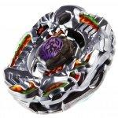

Saramanda Balro DF145SWD
| Saramanda Balro DF145SWD (red) | |
|  | |
| Number: | BBG-24 |
|---|---|
| System: | Beyblade Zero-G |
| Type: | Balance |
| Element: | Darkness + Fire |
Contents
Note: In the TAKARA-TOMY release, this Beyblade and its twin Killerken Balro A230WB are exclusive to the Ultimate Synchrom DX Sets. The red edition is limited to the BBG-24 Ultimate Synchrom DX Set Attack & Balance Type.
Stone Face: Balro
- Weight: grams
This Stone Face has a printed mark representing a Balrog head, based on a mythical beast notably featured in the Lord of the Rings saga.
Chrome Wheel 1: Balro
| Weight: | 31.45 grams | Full Width: | 47.63 mm | Height: | 6.37 mm |
Like all Chrome Wheels, Balro possesses an asymetrical design: at the top is a sculpted horned demon head with an abnormal, star-shaped right eye. Most of the Balro Chrome Wheel's surface is dedicated to huge rigged horns, while the bottom illustrates a carved bat surrounded by flames. The overall structure forms a jagged hexagonal shape.
Chrome Wheel 2: Saramanda
| Weight: | 30.6 grams | Full Width: | 47.36 mm | Height: | 6.31 mm |
Besides the obligatory hole on one side of Saramanda, this Chrome Wheel's design generally consists of lines of scales and points coupled with some curves on the sides, near the hole. There are also two other, smoother areas atop Saramanda, to break the patterns of sharp scales. Block-like parts reminescent of Leone's paws adorn two other portions of the sides as well.
Track: Down Force 145
| Weight: | 1.5 grams | Full Width: | 21.53 mm | Height: | 14.50 mm |
DF145 has four upward facing wings protruding from the top of the Track, which aside from giving it extra weight are meant to push air downwards. It is on par with 145, while AD145 is superior by a small margin when used in Stamina combinations.
Use in Stamina Customization
If the aforementioned parts aren't accessible, DF145 can still be put to good use in the custom, Scythe Kronos DF145WD.
Bottom: Sharp Wide Defense
| Weight: | 0.82 gram | Full Width: | 15.67 mm | Tip Width: | 14.58 mm | Full Height: | 8.96 mm | Tip Height: | 6.50 mm |
SWD has an odd shape: it's basically a small sharp tip encased in a straight, circular frame of plastic, leaving a hole between the tip and the frame. From the side, SWD looks like a large FS with a smaller tip.
Other Versions
- Killerken Balro A230WB - BBG-25 Ultimate Synchrom DX Set Defense & Stamina Type (Purple)